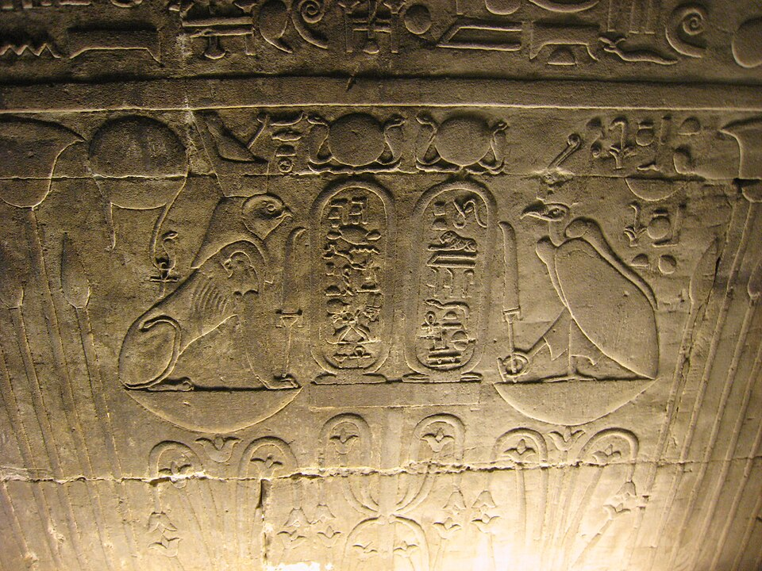

Высоко над скалами Нехема (Эль-Каб), города грифов в Верхнем Египте, кружит её птица — и кружит её культ с первых дней единого государства. Нехбет — «Владычица Нехема», стервятница, ставшая богиней Верхнего Египта: её белая корона и гриф на челом фараона — половина всякой царской власти. Рядом с коброй Уаджит они образуют «Двух Владычиц» (Небти) — второе имя каждого царя Египта: «живы обе кобры, дано имя такое-то».
Её птица — стервятник (гриф), не орёл. Египтяне верили, что грифы — сплошь самки: «мать без отца». Отсюда — её тайна: она кормилица и родительница без зачатия, чистая защита. «Отец отцов, мать матерей» — так поют ей. Когда царь — «сокол Хор», она — его кормящая мать: на барельефах гриф целует царя в уста и наливает грудь над его колыбелью.
Золотая
В «Книге Небесной Коровы» Ра называет её «Золотой» (Нехбет-кау): «Нехбет, золотая, чьё имя среди людей» — и ставит рядом с собой, когда человечество дерзает богам. С тех пор её эпитеты: «Златокрылая», «та, что показывает Ра его врагов», «око Ра» верхнего берега. Не гнев, как змея, а зоркость с высоты: она видит врага за три нома и предупреждает владыку.
Крылья над именем
На саркофаге и тронном кресле Тутанх-Амуна две богини — кобра и гриф — распростёрли крылья вокруг картуша с царским именем: «Две Владычицы охраняют имя». Гриф держит анх и уас: жизнь и власть. Тот же сюжет — на стенах храмов: два крыла над священной ладьей, два глаза над вратами неба. Имя царя, закрытое её крылом, не подвластно времени — так и вышло: мы читаем эти имена до сих пор.
Помогает родить
В заупокойном храме Хатшепсут (Дейр-эль-Бахри) божественные роды царицы принимают семь богинь-повитух — и среди них названа «Нехбет из Нехема»: она принимает на крылья новорождённую «дочь Ра». Здесь она — акушерка богов: та же роль, что у женщин в топямах дельты у колыбели Хора. Белый гриф — первая, кто берёт на руки царственное дитя.
Храм и город
- Эль-Каб (Нехем) — «город стервятников»: его стены позднего периода до сих пор опоясывают долину; храм Нехбет достраивал Нактнеб I — последние триста лет её культ молод.
- При ней — её жрицы «кормилицы», а в городе — особое жреческое писчее братство; к ней несли обеты за сына на войне.
- В её имени клялись: «жива Владычица Верхнего Египта» — клятва южного двора наравне с клятвой Ра.
Интересные факты
- Голова стервятника — иероглиф имени (G16–G17 в списке Гардинера); её знак стоит на Белой короне с додинастических печатей.
- «Нехбет» читается и в женских именах: «Нехбет-нефрет» — «Нехбет прекрасна»; девочки носили её амулеты из стеатита.
- На царских печатях и в «приведении врагов» гриф рвёт врагов царя — та же «мать» беспощадна к чужим детям, что опасна за своих.
- Греческие писатели называли её «Нехебис», а город — «Полис ястребов»; культ угас в IV веке, но храмовые стены стоят.